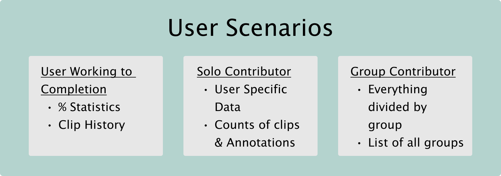

Pyrenote
Note: Some functionality like navbar and additional content and images are still being addedAbstract
Pyrenote is a project in development by a growing group of student researchers here at UCSD. It's primary purpose is to allow anyone to contribute to research by labeling data in an intuitive and accessible way. Right now it is currently being used to develop a sort of voice recognition for birds. The goal is to make an algorithm that can strongly label data (say where in the clip a bird is calling and what bird is making the call). To do this, a very vast dataset is needed to be labeled. I worked mostly on the user experience side. Allowing them to interact with their labeling in new ways, such as keeping tabs on their progress and reaching goals. Developing a User Profile page was the primary source for receiving this data and was developed iteratively as a whole new page for the site
Q1 Progress
- Learning about the project
- Purpose
- History
- Bird Domain Knowledge
- Using Pyrenote
- Developing Ideas
- Prototypes
Using Pyrenote
As a user of Pyrenote I came up with a few ideas and improvements I wanted to implements. In the
end, my team and I decided to make a User Profile page. Engaging users is key to the Pyrenote
workflow, because without users, there is no content to be generated. We set out to incorporate a
user page with a few goals in mind:
- To allow users to track their progress on their own, in real time
- To allow users to access previously annotated clips, in case there was an error, incomplete labeling, or anything else.
- To allow managers to organize and access all this data better as well, without manual intervention
Developing Ideas
 Different sets of functionality neededThis was the first set of users we identified and decided we needed to work for. There is different data for each and different ways to access the data so it will allow the development of each part to work fairly iteratively
Prototyping
 Prototype 1
Prototype 1 The first prototype I made and presented to the team. Developed in Figma and shared in our weekly meetings. I eventually got a lot of feedback that paved my direction for the following quarter. A lot more data was desired and organized in a different way
Demo Vid:Live Demo
Q2 Progress
- Backend Learning
- Learning to Upkeep a Developing Repo
- PR Requests
- Versioning
- Prototype 2.0
- New Frontend
- New Backend (?)
Backend Learning
I met with with one of our lead programmers and designers for the site. Sean helped me throughout this entire quarter and taught me during each step of my journey.
Repo Upkeep
Prototype 2

Prototype 2